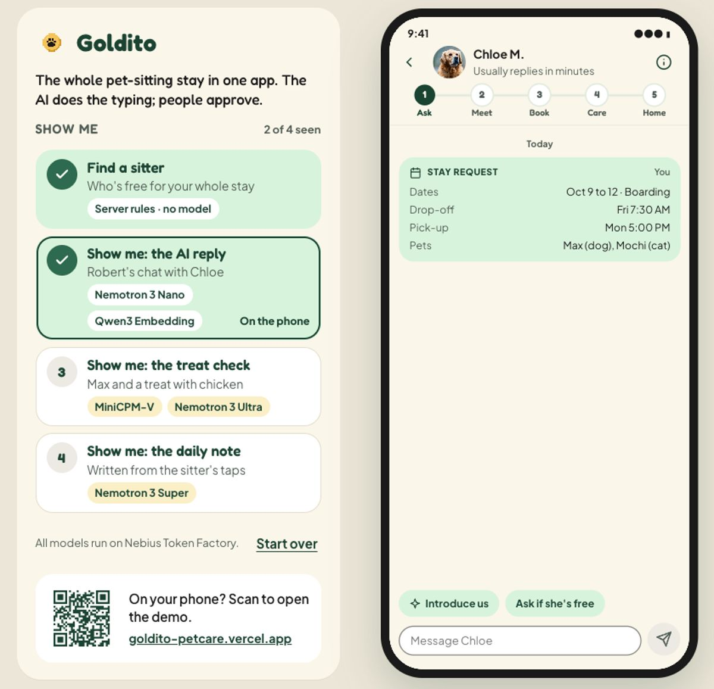

Everything we've designed, in one place우리가 디자인한 모든 것, 한곳에
Goldito is a pet-sitting app for dogs and cats: one stay in five stages, from the first question to the ride home, with an AI that answers, plans and writes so the sitter can just care. This site holds the Draft (the design target, playable in three looks), the step-by-step flows for older owners, the brand, and the plan to the Oct 30 submission.Goldito는 강아지와 고양이를 위한 펫시팅 앱이에요. 첫 질문부터 집에 오는 길까지 한 번의 스테이를 다섯 단계로, AI가 답하고 계획하고 써 줘서 시터는 돌봄에만 집중해요. 이 사이트에는 초안(디자인 목표, 세 가지 룩으로 체험), 어르신을 위한 단계별 흐름, 브랜드, 그리고 10/30 제출까지의 계획이 있어요.
Oct 30 · 10 AM PT
Oct 28
Get started시작하기
Three ways in, from quickest to most complete.들어가는 세 가지 방법, 빠른 것부터.
?view=split to see both phones side by side.goldito-petcare.vercel.app → Sign in → Demo owner(Robert) 또는 Demo sitter(Chloe). 컴퓨터에서는 ?view=split을 붙이면 두 폰이 나란히 보여요.
3Run it on your computer내 컴퓨터에서 실행For trying components in the real code. Needs two settings files from Minsik.실제 코드에서 컴포넌트를 시험할 때. 민식 님의 설정 파일 두 개가 필요해요.
- Clone minsikpaul92/Goldito.minsikpaul92/Goldito를 클론하세요.
- Save Minsik's two files as
frontend/.envandbackend/.env(both are git-ignored).민식 님의 파일 두 개를frontend/.env와backend/.env로 저장하세요 (둘 다 git에 안 올라가요). - App:앱:
cd frontend && npm install && npx expo start --web→ localhost:8081→ localhost:8081 - Server (photo uploads and AI):서버 (사진 업로드와 AI):
cd backend && python3.12 -m venv .venv && source .venv/bin/activate && pip install -r requirements.txt && uvicorn app.main:app --reload --port 8000 - Sign in with Demo owner or Demo sitter. Both demo accounts are shared with the team, and Demo tools' reset affects everyone.Demo owner 또는 Demo sitter로 로그인. 데모 계정은 팀이 같이 쓰고, Demo tools의 초기화는 모두에게 적용돼요.
| Service서비스 | What it's for용도 | frontend/.env | backend/.env |
|---|---|---|---|
| Supabase | Database and sign-in데이터베이스와 로그인 | URL · anon key | service role · JWT secret |
| Cloudinary | Photos and videos사진과 영상 | cloud name클라우드 이름 | API key · secret |
| Nebius Token Factory | The AI models (vision, safety, report, fast)AI 모델 (비전, 안전, 알림장, 빠른 응답) | — | API key · 4 model names모델 이름 4개 |
| Tavily | Vet and FDA sources for the treat check간식 확인의 수의사 · FDA 출처 | — | API key |
| Video Meet & Greet links and invites영상 Meet & Greet 링크와 초대 | — | OAuth client · secret · refresh token | |
| Demo데모 | Try-demo buttons and the reset tool데모 버튼과 초기화 도구 | password · tools on비밀번호 · 도구 켬 | password · reset on비밀번호 · 초기화 켬 |
| Plumbing기본 설정 | Server address, time zone, allowed local ports서버 주소, 시간대, 허용된 로컬 포트 | API URL · time zone시간대 | CORS (8081, 19006) · time zone시간대 |
Keep the files private. Red values are secrets: never paste them into chat, issues, Figma, this site or a commit. Delete downloaded copies once they're in place.파일은 비공개로. 빨간 값은 비밀이에요: 채팅, 이슈, Figma, 이 사이트, 커밋에 절대 붙이지 마세요. 자리에 넣은 뒤 다운로드한 사본은 지우세요.
For judges: Goldito in two minutes심사위원용: 2분 안에 보는 Goldito
The judging session said value has to be clear fast. On desktop, a panel next to the phone jumps straight to each AI moment and names the model behind it (#111).심사 세션에서 가치가 빨리 보여야 한다고 했어요. 데스크톱에서 폰 옆 패널이 각 AI 순간으로 바로 이동하고, 그 뒤의 모델 이름을 보여 줘요(#111).

Play the judge panel심사위원 패널 체험Find a sitter, the AI reply, the treat check, the daily note시터 찾기, AI 답장, 간식 체크, 알림장The look: Expressive룩: 익스프레시브
The logo's typeface, tag gold, color blocks and illustrations. It's the look we're building (D1, Oct 15). Balanced and Playful are paused, not deleted.로고 서체, 태그 골드, 컬러 블록과 일러스트. 우리가 만들어 갈 룩이에요(D1, 10/15). 밸런스드와 플레이풀은 지운 게 아니라 잠시 쉬는 중이에요.
Three looks, one app세 가지 룩, 하나의 앱
Same screens, same data. Pick one to open it next to today's app. Choosing one (decision D1) is on the Plan.같은 화면, 같은 데이터. 골라서 지금 앱과 나란히 열어 보세요. 하나를 고르는 결정(D1)은 계획 탭에 있어요.
Where each stage is단계별 현황
In the app on main (app status as of Oct 15), and in the Draft.main의 앱(10/15)과 초안 기준.
Every README promiseREADME의 모든 약속
Play it in the Draft, open its Figma section or README paragraph, and see whether the app has it yet.초안에서 체험하고, Figma 섹션이나 README 문단을 열고, 앱에 이미 있는지 확인하세요.
| What the README promisesREADME의 약속 | In the app앱 | Open열기 |
|---|
“Not in the Draft yet” rows are in the app (or planned) but the Draft hasn't caught up. App status comes from the team's test guide; the list lives in screens.js, so this table and the Prototype page never disagree.“아직 초안에 없음” 줄은 앱에는 있지만(또는 계획) 초안이 아직 따라가지 못한 것이에요. 앱 상태는 팀 테스트 가이드 기준이고, 목록은 screens.js 한 곳에 있어서 이 표와 프로토타입 페이지가 어긋나지 않아요.
Latest최근
The last two stretches. Everything since Oct 1 is in the Plan's design log.최근 두 묶음. 10/1부터 전부는 계획의 디자인 로그에 있어요.
Expressive in Figma, sketches, searchFigma의 익스프레시브, 스케치, 검색
- Sketches for every design ticket, and the chat booking playable모든 디자인 티켓과 채팅 예약 스케치
- Every Expressive screen in Figma, built from Expressive components모든 익스프레시브 화면을 익스프레시브 컴포넌트로 Figma에
- A Pages layout for the stay, site search, the Project page스테이의 Pages 레이아웃, 사이트 검색, 프로젝트 페이지